Perché è importante
La villa mostra come i Romani più ricchi unissero lusso, natura e simboli di prestigio in un unico spazio abitativo.
Antica Roma • Prima Porta
Un luogo dove arte, natura e potere si incontrano: la residenza della moglie di Augusto custodiva ambienti raffinati e un giardino dipinto che ancora oggi ci fa immaginare il fascino della Roma imperiale.
Scopri piante e uccelliIntroduzione
La Villa di Livia Drusilla si trova a Prima Porta, poco fuori Roma, ed era una delle residenze più eleganti legate alla famiglia imperiale. Appartenne a Livia Drusilla, moglie dell'imperatore Augusto, e divenne famosa soprattutto per la straordinaria sala ipogea decorata con affreschi che ricreano un giardino ideale.
Entrando in questo ambiente si ha l'impressione di essere circondati da un giardino eterno: alberi da frutto, arbusti fioriti, erbe profumate e molti uccelli sono dipinti con grande precisione. Quegli affreschi non sono soltanto una meraviglia visiva, ma anche una testimonianza delle specie botaniche e faunistiche che i Romani apprezzavano e utilizzavano como simboli di pace, abbondanza e rigenerazione.
In questa pagina puoi esplorare le piante e gli uccelli riconosciuti dagli studiosi, aprire le schede botaniche e ornitologiche e conoscere il valore storico di ogni specie nel contesto del giardino romano.
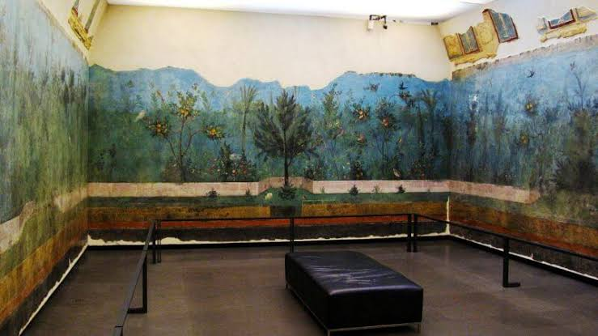
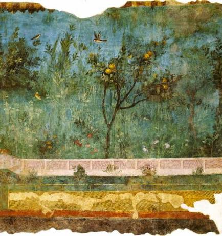
La villa mostra come i Romani più ricchi unissero lusso, natura e simboli di prestigio in un unico spazio abitativo.
Gli affreschi creano l'illusione di un giardino senza stagioni, sempre verde e pieno di vita.
L'abbondanza di frutti, fiori e animali suggerisce prosperità, pace e armonia sotto il potere di Augusto.
Flora e fauna
Negli affreschi del famoso giardino sotterraneo compaiono molte specie botaniche e diversi uccelli. Ecco i principali elementi riconosciuti dagli studiosi.
Tocca un nome per aprire la scheda botanica.
Alcune identificazioni possono variare negli studi moderni, ma tutte mostrano l'idea di un giardino animato, ricco e armonioso.
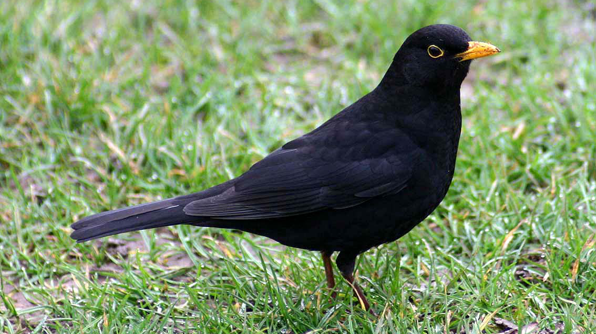
Uccello
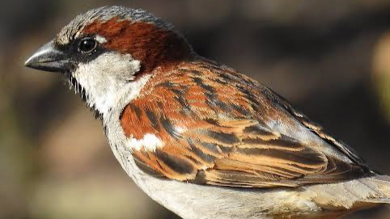
Uccello
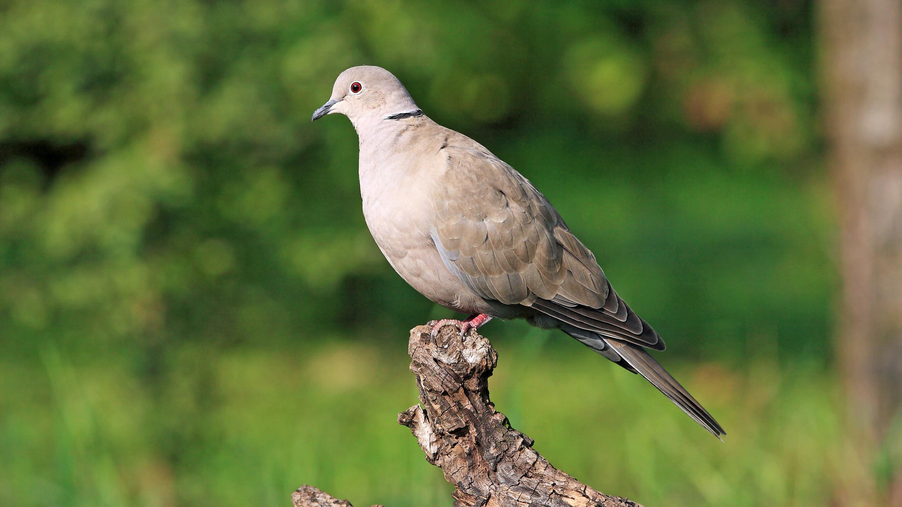
Uccello
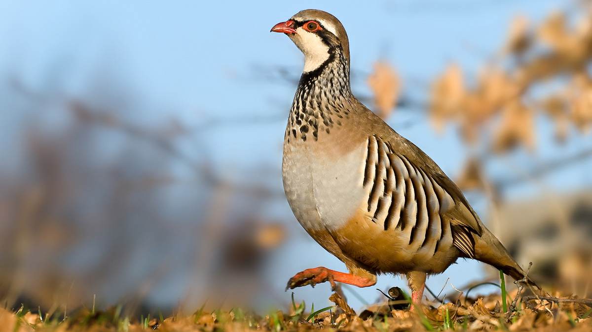
Uccello
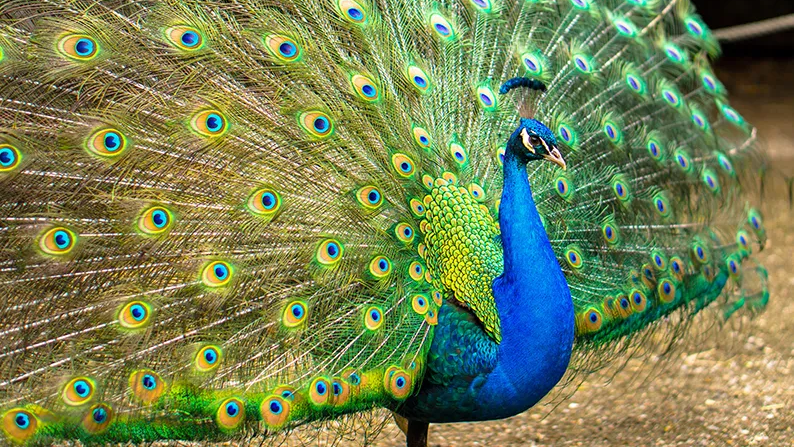
Uccello
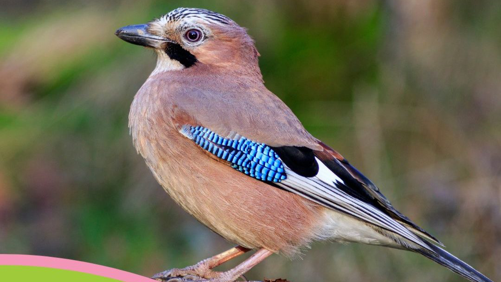
Uccello
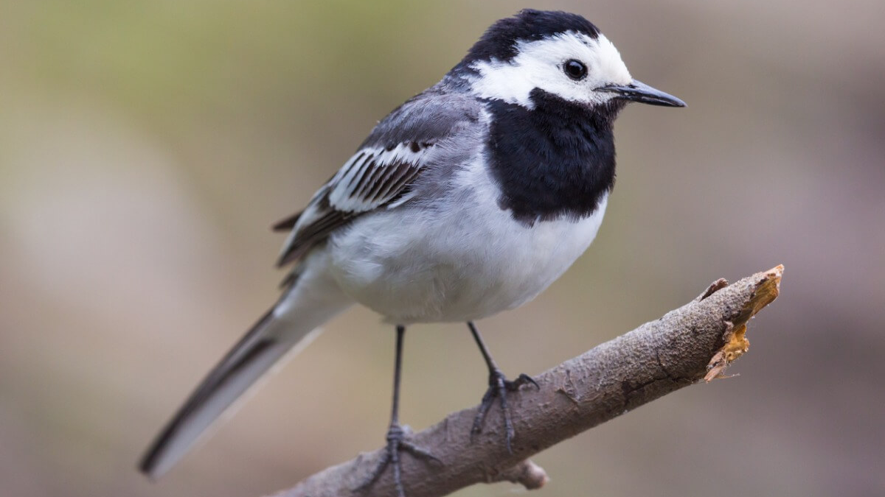
Uccello
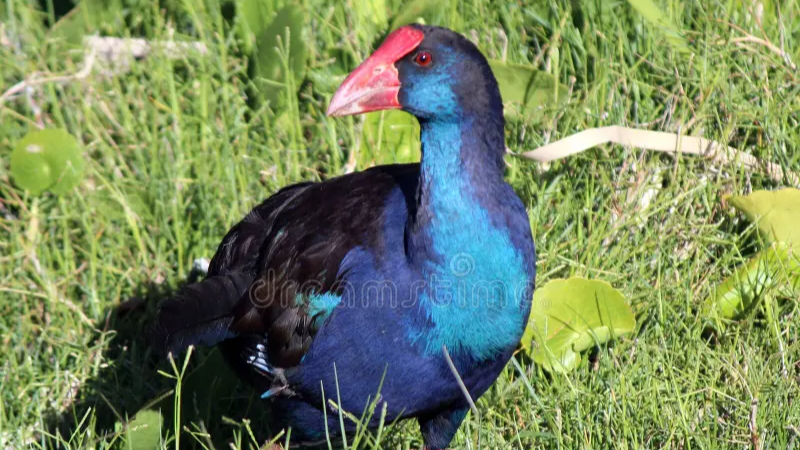
Uccello
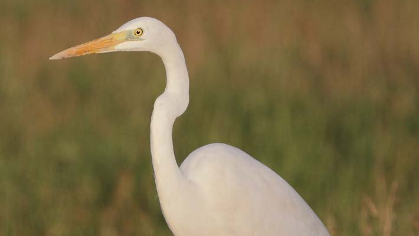
Uccello
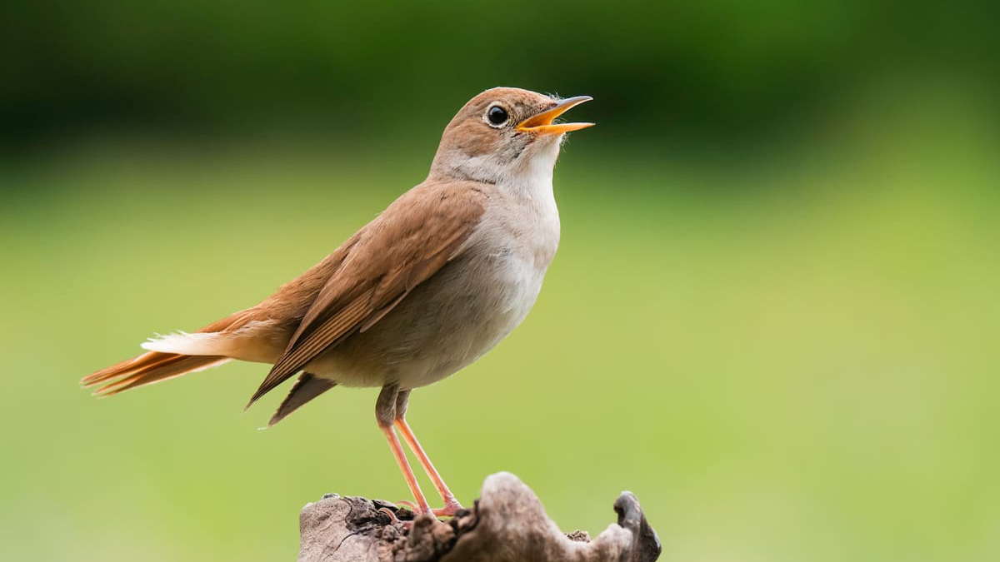
Uccello
Conclusione
La Villa di Livia Drusilla non è soltanto un edificio antico: è una finestra sul gusto romano per il paesaggio, per il simbolo e per la bellezza. Le piante e gli uccelli dipinti trasformano le pareti in un giardino ideale, capace ancora oggi di stupire chi lo osserva.
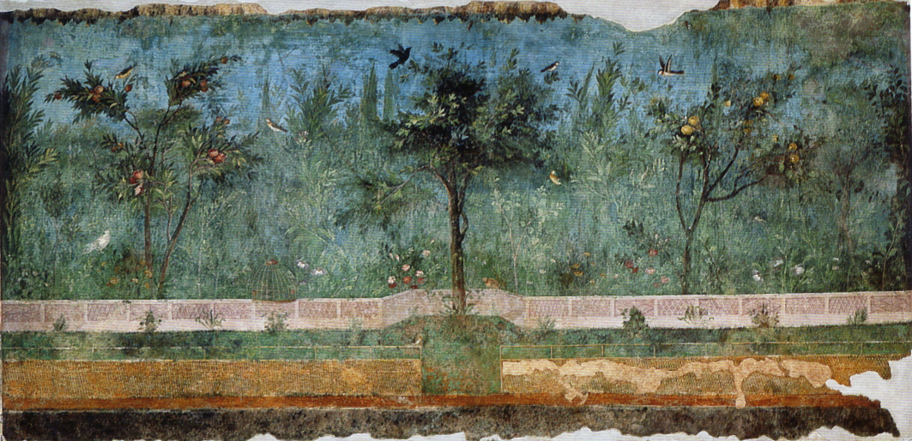
Condividi il tuo gradimento con una valutazione:
Grazie per la tua recensione! L'abbiamo ricevuta.
Visualizzazioni: 0
Liceo Statale Duca Degli Abruzzi
a.s. 2025-26 • Classe 2AA
Liceo Scientifico opzione scienze applicate
A cura di Bosco Caterina Furlanetto Nicolò e Vendrame Matteo
Referente di progetto Tranchese Cristina